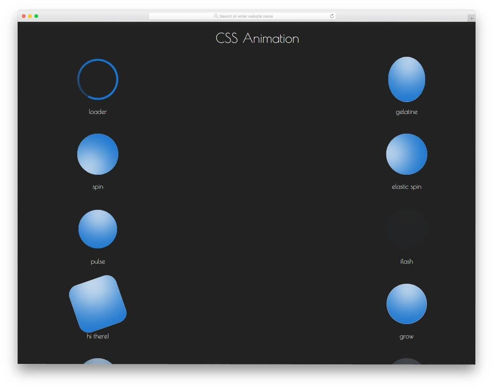
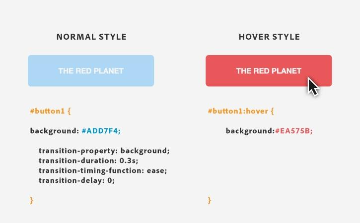
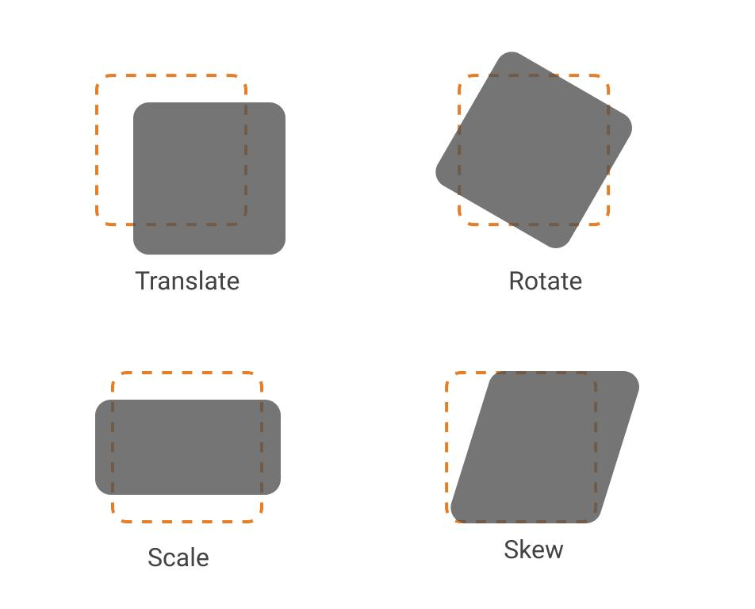
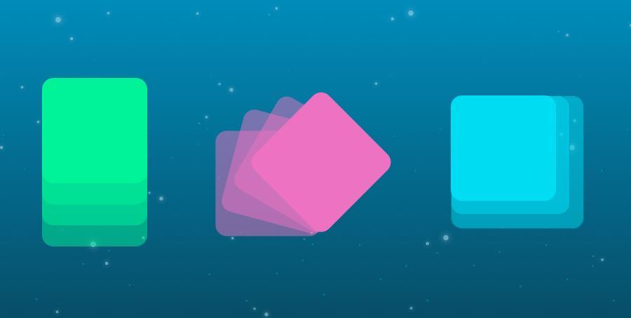
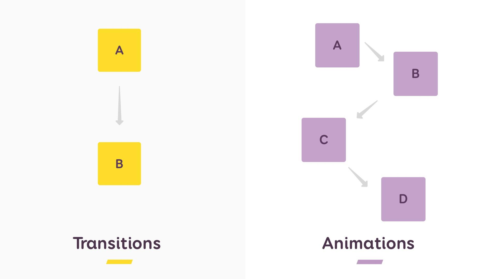

¿Qué son las animaciones en CSS?
Las animaciones en CSS permiten agregar movimiento y efectos visuales a los elementos de una página
web sin necesidad de usar JavaScript. Gracias a ellas, los sitios web se ven más dinámicos, modernos
e interactivos.
Ventajas y usos principales
- Mejoran la experiencia del usuario.
- Hacen que las páginas sean más atractivas.
- Ayudan a destacar información importante.
- Permiten crear efectos modernos sin mucho código.
- Son más ligeras y rápidas que muchas animaciones hechas con JavaScript.

Transiciones en CSS
Las transiciones en CSS permiten cambiar suavemente el valor de una propiedad cuando ocurre un
evento, por ejemplo cuando el usuario pasa el mouse sobre un elemento.
Se utilizan con la propiedad transition.
Propiedad transition
La propiedad transition controla cómo ocurre el cambio entre un estado y otro.
Sintaxis:
transition: propiedad duración efecto retraso;
Parámetros Principales
-
transition-property
Define qué propiedad tendrá transición. Indica qué propiedad se va a animar (color, tamaño, posición, etc.).
Sintaxis:
transition-property: background; -
transition-duration
Define la duración de la transición. Indica cuánto tiempo durará la animación.
Sintaxis:
transition-duration: 1s; -
transition-timing-function
Controla la velocidad de la animación.
- ease (predeterminado): empieza lento, acelera y termina lento.
- linear: velocidad constante.
- ease-in: empieza lento y acelera.
- ease-out: empieza rápido y termina lento.
- ease-in-out: empieza lento, acelera y termina lento.
Sintaxis:
transition-timing-function: ease; -
transition-delay
Define cuánto tiempo espera antes de iniciar.
Sintaxis:
transition-delay: 2s;

Transformaciones en CSS
Las transformaciones en CSS permiten modificar la forma, tamaño o posición de un elemento. Se utilizan mediante la propiedad transform.
Propiedad transform
La propiedad transform permite aplicar diferentes efectos visuales.
Sintaxis:
transform: transformation_function(parameters);
Tipos de transformaciones
-
translate()
Mueve un elemento de posición.
Sintaxis:
transform: translate(50px, 20px); -
rotate()
Rota un elemento.
Sintaxis:
transform: rotate(45deg); -
scale()
Aumenta o reduce el tamaño.
Sintaxis:
transform: scale(1.5); -
skew()
Inclina un elemento.
Sintaxis:
transform: skew(20deg);
Aplicaciones prácticas
- Crear botones interactivos.
- Hacer zoom en imágenes.
- Rotar íconos.
- Crear tarjetas animadas.
- Mejorar diseños modernos.

Animaciones en CSS
Las animaciones en CSS permiten crear movimientos automáticos y continuos usando @keyframes.
Propiedad animation
La propiedad animation sirve para controlar una animación.
Uso de @keyframes
@keyframes define los pasos de la animación.
Aplicaciones prácticas
-
animation-name
Indica el nombre de la animación.
Sintaxis:
animation-name: mover; -
animation-duration
Indica la duración de la animación.
Sintaxis:
animation-duration: 2s; -
animation-iteration-count
Indica cuántas veces se repite la animación.
Sintaxis:
animation-iteration-count: infinite; -
animation-delay
Indica el tiempo de espera antes de iniciar la animación.
Sintaxis:
animation-delay: 2s; -
animation-direction
Indica la dirección de la animación.
- normal
- reverse
- alternate
- alternate-reverse
Sintaxis:
animation-direction: normal;

Diferencias entre transiciones y animaciones
| Transiciones | Animaciones |
|---|---|
| Necesitan un evento | Pueden ejecutarse solas |
| Son simples | Son más avanzadas |
| Cambian entre dos estados | Pueden tener varios pasos |
Usan transition |
Usan animation y @keyframes |
¿Cuándo utilizar cada una?
Usar transiciones cuando:
- Se necesita un efecto simple.
- Hay interacción del usuario.
- Se desea suavizar cambios.
Usar animaciones cuando:
- Se necesita un efecto complejo.
- La animación debe repetirse.
- Se quieren varios pasos o efectos automáticos.
Ventajas y desventajas
Transiciones
- Ventajas: Fáciles de usar, poco código.
- Desventajas: Limitadas, solo cambian entre dos estados.
Animaciones
- Ventajas: Más control, movimientos complejos.
- Desventajas: Más código, más difíciles de configurar.
Ejemplos en Vivo
[ TRANSICIÓN ]
Botón Hover
[ ANIMACIÓN ]
Pelota moviéndose